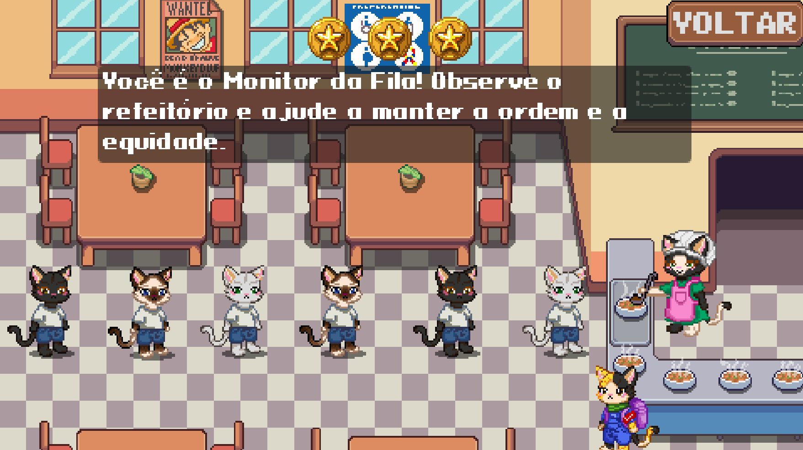
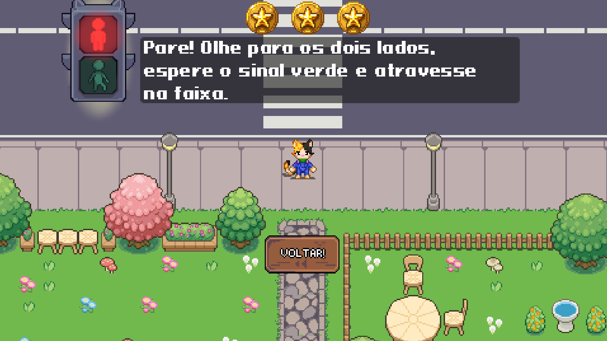
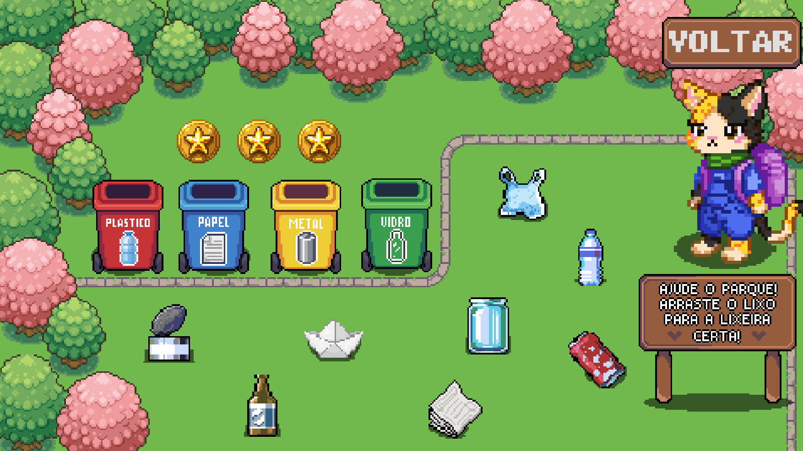
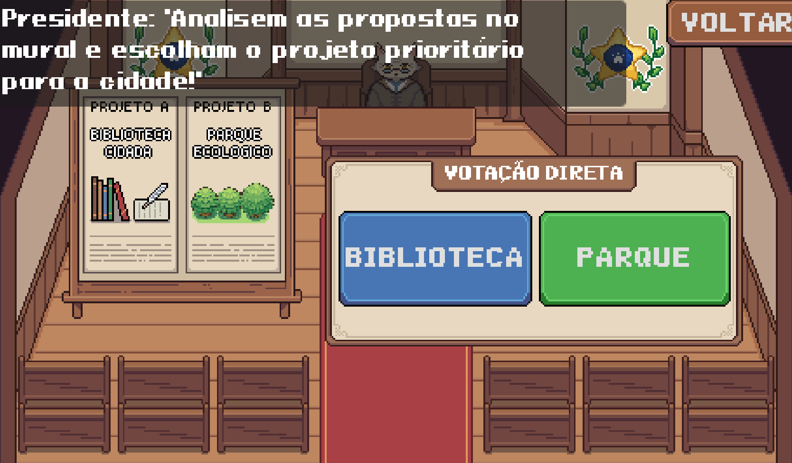
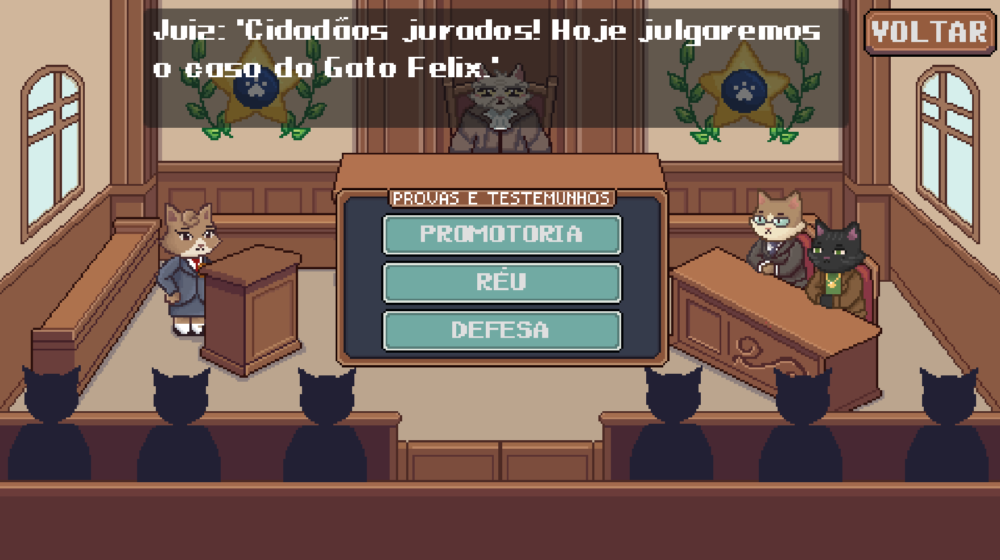
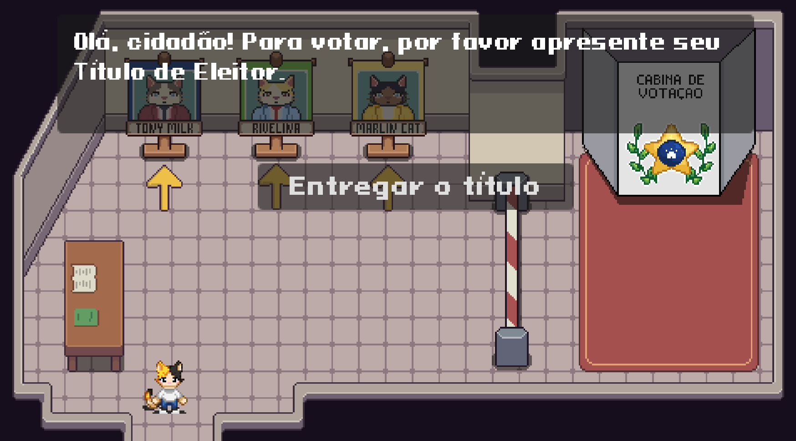

Minigame 01
Não Furar a Fila
Conceito Central: Ética e Respeito Coletivo
Desafios interativos de paciência e respeito aos acordos tácitos de convivência no refeitório e corredores escolares.
Uma jornada de letramento cívico estruturada progressivamente: do respeito ao espaço compartilhado na infância à participação política ativa na juventude.

Conceito Central: Ética e Respeito Coletivo
Desafios interativos de paciência e respeito aos acordos tácitos de convivência no refeitório e corredores escolares.

Conceito Central: Segurança Viária e Regras
Simula o trânsito da cidade onde o jogador deve observar sinais e faixas para se deslocar com segurança.

Conceito Central: Consciência Socioambiental
Mecânica ágil de separação correta de descartes, pontuando o dever individual na preservação dos espaços públicos.

Conceito Central: Democracia Direta e Impacto Urbano
Consultas populares onde os votos alteram permanentemente as camadas de mapa (TileMapLayers) da cidade felina.

Conceito Central: Justiça, Provas e Julgamento Ético
Análise crítica de depoimentos e evidências para decidir o desfecho de dilemas éticos na corte da cidade.

Conceito Central: Voto Consciente e Representação
Simulação de propostas, debates e contagem de votos para entender o funcionamento do sistema representativo.
Uma curva de aprendizado pensada para consolidar valores antes de exigir decisões institucionais complexas.
O jogador aprende deveres cotidianos no Módulo Mirim: empatia, trânsito e meio ambiente.
No Plebiscito e no Júri, descobre como o diálogo e a análise de dados afetam o município.
Consolida o aprendizado nas Eleições, escolhendo representantes com base em programas éticos.